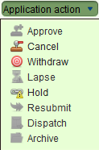

Record Title Survey
When a new Title Survey is submitted to LAA for approval the details
from the survey must be recorded in SOLA before the leases over any
new plots can be issued. Lodging the application will typically be
the responsibility of a Customer Service Representative, with Survey
Services responsible for assessing the new survey and recording the
survey details in SOLA.
Lodge an Application
Steps
- From the Dashboard, select the
 New application tool to open the Application Details screen.
New application tool to open the Application Details screen.
- On the General tab, enter the contact details for the person
making the request and select the agent from the Agent drop down if appropriate.
- On the Services tab, add the Change to Cadastre service to the application.
- On the Plot tab, search for any underlying plots of the plan
(i.e. the plots that will be extinguished by the plan) and add them
to the application. This step may not be required if there are no plots
to be extinguished by the plan.
- On the Documents tab, record each of the physical documents provided
by the person registering the POA. At a minimum the Change to
Cadastre service requires a Survey Report.
- Ensure you select the appropriate document type and record
the document date (i.e. the date recorded on the face of the
physical document) or today’ s date if the physical document is not dated.
- Enter a reference number for the document and a description.
The reference number should be taken from the physical document.
If the physical document does not have any reference number,
then enter the application number, period and document
sequence number (e.g. 120001.03).
- The Source Agency is the name of the organization that created
the physical document. E.g. For the POA, this may be the name
of the grantor. This field is optional and can be left blank
- d. If you have scanned the document, use the Attachment field
to link in the scanned image. If you have not yet scanned the
document, you will need to do this at a later stage and link it
into the document using the Edit Document functionality available
from Document Search.
- Click the
 Save button. This will lodge the application and produce the lodgement
notice. Print the notice and give it to the surveyor (or their representative)
as proof the application has been lodged. The lodgement notice will
indicate the fee to pay for the application.
Save button. This will lodge the application and produce the lodgement
notice. Print the notice and give it to the surveyor (or their representative)
as proof the application has been lodged. The lodgement notice will
indicate the fee to pay for the application.
Fee Payment
TO BE REVISED
Once the lodgement notice is printed, the person will need to take the
notice to the cashier and arrange payment. When payment has been made,
the cashier will locate the Unassigned application list on the SOLA Dashboard,
 Open the application and check the Fee Paid flag on the Fees tab to
indicate the application can continue processing./p>
Open the application and check the Fee Paid flag on the Fees tab to
indicate the application can continue processing./p>
Assign the Application
Before work can begin on recording the survey information in SOLA,
the application must first get assigned to a Survey Services staff member.
Assignment of the application indicates that work on the survey is underway.
Steps
- From the SOLA Dashboard, check the Unassigned applications list
to confirm the fee for the application has been paid. If the fee
has not been paid it will not be possible to assign the application.
In this situation notify the person noted as the contact and/or cashier
to confirm the payment status for the application
- If the application fee has been paid, select the application in
the Unassigned applications list and click the
 Assign tool. This will open the Application Assignment dialog.
Assign tool. This will open the Application Assignment dialog.
- Click the Assign button to assign the application. When the Assign
action is complete, you will be returned to the Dashboard and the
assigned application will appear in your Assigned applications list.
Typically users will only be able to assign applications to themselves
(i.e. they will be able to pull work), however team leaders will be able
to manage the workload of their teams and will be able to assign and
reassign applications to other users. Note that the
 and
tools can be used reassign the application to another user if necessary.
and
tools can be used reassign the application to another user if necessary.
Manual Assessment
The Survey staff member assigned to the application will perform the
necessary manual checks to confirm the survey complies with the appropriate
survey regulations. If the assessment of the survey is successful, the
staff member can begin recording the details of the survey in SOLA using
the Change to Cadastre service. If the assessment reveals issues with
the survey that must be addressed by the surveyor, then the survey will
need to be placed on hold until the necessary information is provided.
Holding and Resubmitting the Survey
When the survey requires further information from the surveyor, it will
be necessary to update the application in SOLA to the On Hold status.
Steps
You use the Document Registration screen to register the POA>
- Confirm that the survey will require further information
from the surveyor with the appropriate team leader.
- Create the notice describing the issues that need to be addressed by the surveyor.
- Open the application from the Assigned applications list in the Dashboard.
Go to the Documents tab and create a document and attach the notice to it.
Attaching the notice to the application will ensure the reasons for
placing the plan on hold are recorded in SOLA.
- Using the Application action dropdown, select the
Hold action. This will update the application status to On Hold
and remove the application from your Assigned applications list.
If the Hold action is not enabled on the Application action dropdown,
confirm the application is assigned to you and that you have the
Hold/Requisition Application role by asking IT Services to check
your SOLA User setup.

- Dispatch the notice to the surveyor so that they are aware of the
items that must be addressed. You can record that when the notice
is sent by using the
 Dispatch action of the Application action dropdown.
Dispatch action of the Application action dropdown.
Once the surveyor addresses the items listed in the notice, they will resubmit the survey.
- Use the
 Application search to locate the application for the survey and
Open it.
Application search to locate the application for the survey and
Open it.
- Select the
Resubmit action on the Application action dropdown. This will move the
application back to the Assigned applications list ready for further processing.
It is possible the surveyor may choose to withdraw the survey.
This can be achieved by using the
Withdraw action on the Application action dropdown. Alternatively, if the
survey remains on hold for an extended period, and no further information
is provided by the surveyor, the application can be lapsed using the
Lapse action. Be aware that once lapsed or withdrawn, the survey
cannot be reinstated.
Change to Cadastre Service
The Change to Cadastre service provides tools that allow you to modify
the existing cadastral network. The following describes the basic process
flow for capturing survey information. Variations to this basic flow
are possible.
Steps
- From the Dashboard,
Open the application from your Assigned applications list.
- On the Services tab, select the Change to Cadastre service and click the
 Start tool. This will open the Change to Cadastre screen.
Start tool. This will open the Change to Cadastre screen.
- If the Map Viewer is not already zoomed to the location of the survey,
use the map search or the map navigation tools to locate the area
of the survey.
- Use the Select Target Plot tool
 to select (or deselect) the underlying parcels as required. Note:
To subdivide or amalgamate existing plots, you must use the Select
Target Plot tool to identify the existing plots that are being
subdivided or amalgamated. If the new plot(s) will be over previously
unsurveyed areas, it will not be necessary for you to use the Select
Target Plot tool unless you use it to assist with node linking to
plots beside the new plot. When used for node linking purposes you
must deselect the target plots before completing the Change to Cadastre service.
to select (or deselect) the underlying parcels as required. Note:
To subdivide or amalgamate existing plots, you must use the Select
Target Plot tool to identify the existing plots that are being
subdivided or amalgamated. If the new plot(s) will be over previously
unsurveyed areas, it will not be necessary for you to use the Select
Target Plot tool unless you use it to assist with node linking to
plots beside the new plot. When used for node linking purposes you
must deselect the target plots before completing the Change to Cadastre service.
- If you have an image of the survey plan, you can choose
to add the plan image into the Map Viewer to assist with digitizing coordinates.
- Capture the survey points for the plan. You can do this by using
the Create / Link Survey Points tool
 to locate survey points directly on the Map Viewer using the mouse,
load new coordinates from a survey data file or use the Survey Points
screen to manually enter the new coordinate details.
to locate survey points directly on the Map Viewer using the mouse,
load new coordinates from a survey data file or use the Survey Points
screen to manually enter the new coordinate details.
- Use the Create / Link Survey Points tool
to link survey points that represent existing marks to the appropriate
target plot nodes. This step is important because it ties the new
survey data to the underlying cadastral network. Once linked, a
survey point will change from being a blue plus to a green plus.
- Use the Survey Points screen to identify any traverse points
from the plan by de-selecting/unchecking the Is boundary checkbox.
- Create the new plots from the plan using the Create New Plot tool
 New plots will automatically get assigned the appropriate plot
number when they are saved.
New plots will automatically get assigned the appropriate plot
number when they are saved.
- Use the Plot List tool
 to open the Plot List screen and print the S.10 Survey Approval form
so that it can be signed and forwarded to the surveyor.
to open the Plot List screen and print the S.10 Survey Approval form
so that it can be signed and forwarded to the surveyor.
- Once all of the relevant information from the survey has been captured
into SOLA, return to the Services tab of the Application Details
screen, select the Change to Cadastre service and click the
 Complete tool. This will run the SOLA business rules to validate
the application data. If there is a critical failure, you must
remedy the failure as it will not be possible to approve the
application otherwise.
Complete tool. This will run the SOLA business rules to validate
the application data. If there is a critical failure, you must
remedy the failure as it will not be possible to approve the
application otherwise.
Notes
- Use
Save on the Change to Cadastre screen regularly.
- The act of saving and/or completing the service will cause the
SOLA business rules to run validating the state of the data.
If you receive rule failures, check
Business Rules
to determine how those failures can be remedied.
- Additional information on using the Change to
Cadastre tools can be found in the Change to Cadastre section.
Approving the Survey
The changes you make to the cadastral network while recording new survey
information remain pending until the application is approved. Survey
approval in SOLA can be achieved using the
 Approve action in the Application action dropdown.
Approve action in the Application action dropdown.
Steps
- Open the application from your Assigned applications list and use the
 Validate tool to check the status of the application data. If
there are any rule failures, review the application data and correct
the issues as appropriate before proceeding to approve the application.
Validate tool to check the status of the application data. If
there are any rule failures, review the application data and correct
the issues as appropriate before proceeding to approve the application.
- Use the
Approve action in the Application action dropdown to approve the application.
This will update the status of the application to Approved as well
as update the cadastral network with the information captured from the survey.
- Dispatch a notice and any other relevant information to the surveyor
to notify them of the approval. You can record that when the notice
is sent by using the
Dispatch action of the Application action dropdown.
Also See